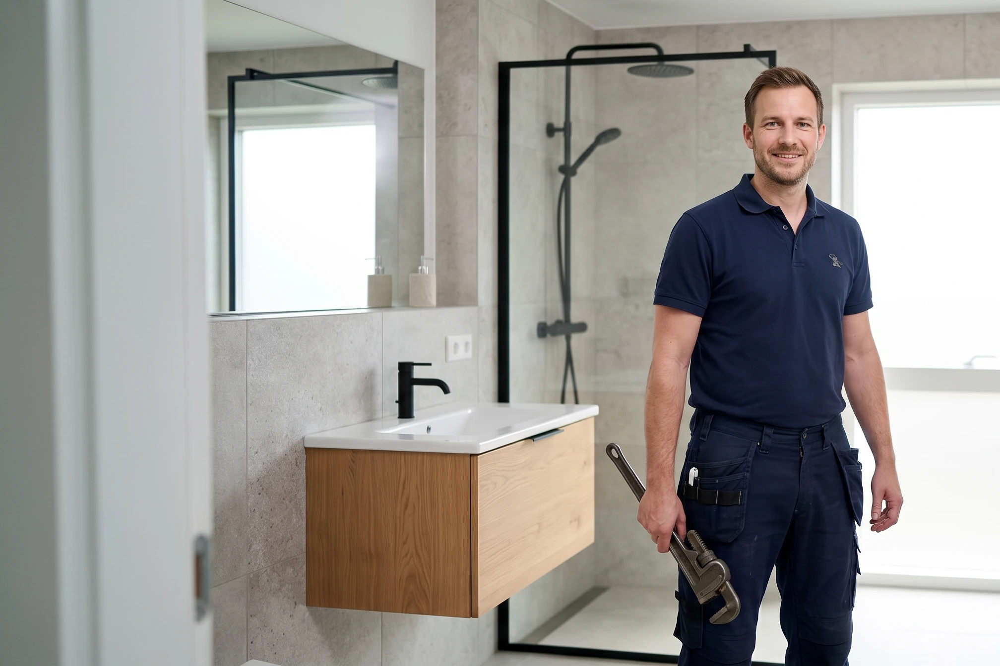
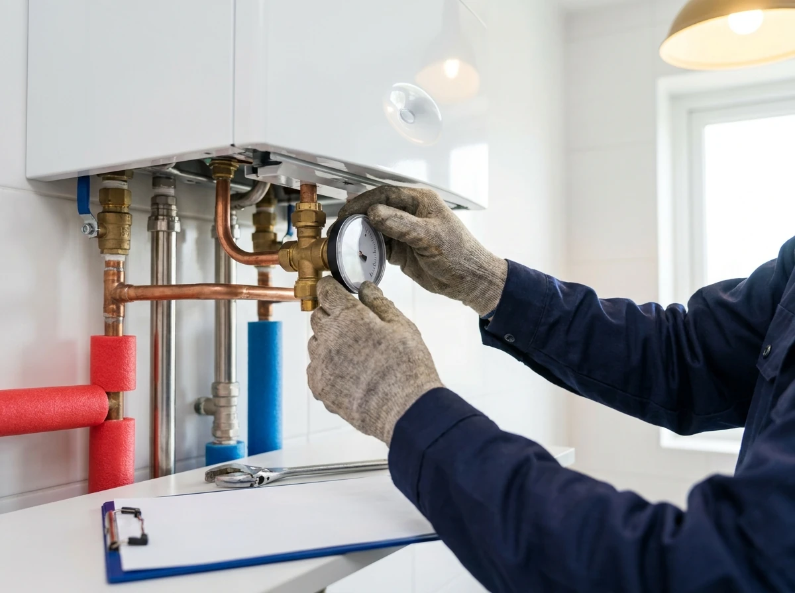
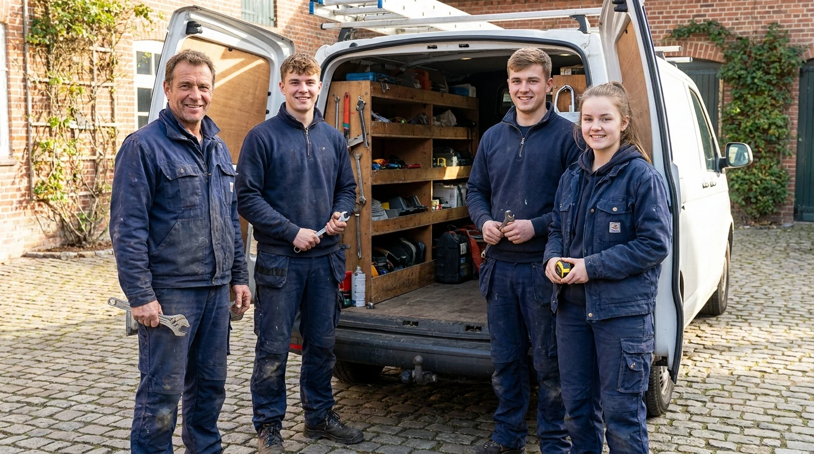
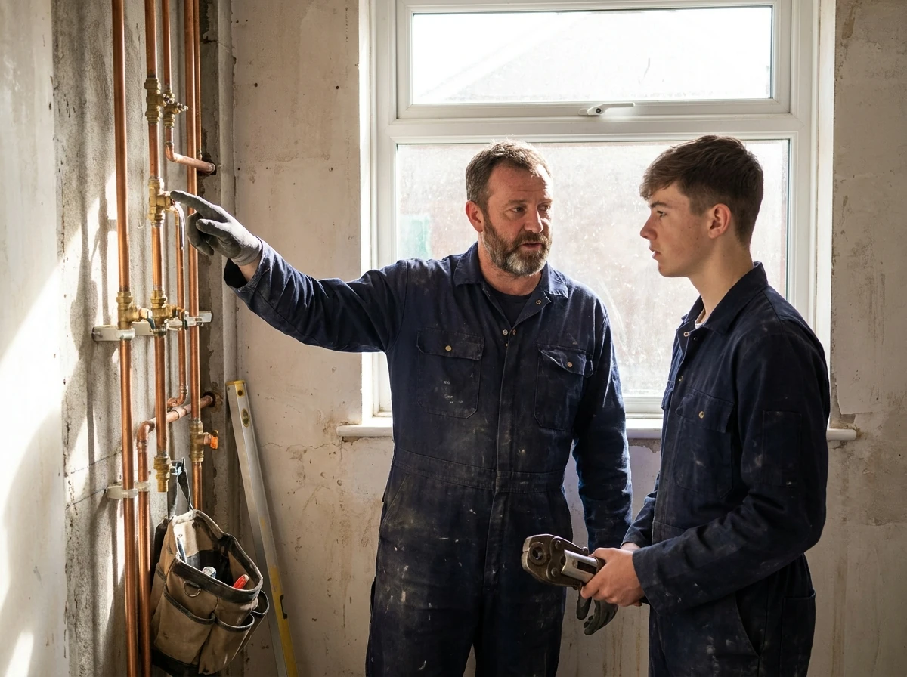

Es ist dringend
Rohrbruch, Wasserschaden, Heizung kalt oder Toilette verstopft? Rufen Sie an – wir kommen, auch abends und am Wochenende.
- Leckage- und Rohrbruchortung
- Heizungsausfall und Störungen
- Verstopfungen und Abflüsse

Handwerk in Ratzeburg seit 1945
Heizung, Sanitär und Bad aus einer Hand – seit über 80 Jahren im Kreis Herzogtum Lauenburg. Fünf Handwerker, die Sie beim Namen kennen. Und ein Notdienst, der wirklich ans Telefon geht.
Sie erreichen uns direkt unter 04541 5501 – meist ohne Warteschleife.
Wobei können wir helfen?
Ob dringend, geplant oder noch in der Überlegung: Sagen Sie uns, worum es geht, und Sie bekommen eine klare Antwort statt eines Kostenvoranschlags im Nebel.
Rohrbruch, Wasserschaden, Heizung kalt oder Toilette verstopft? Rufen Sie an – wir kommen, auch abends und am Wochenende.
Von der ersten Idee bis zur letzten Silikonfuge: Planung, Fliesen, Elektrik und Sanitär koordinieren wir für Sie – ein Ansprechpartner, ein Terminplan.
Wärmepumpe, Brennwert oder Hybrid? Wir rechnen ehrlich durch, was zu Ihrem Haus passt – und beantragen die Förderung mit.
Unser Watt-Rechner
Die häufigste Ursache für hohe Heizkosten ist eine Heizung, die zu groß dimensioniert ist. Unser Rechner ermittelt in sechs Fragen Ihre Heizlast in Watt, den Jahreswärmebedarf und die zu erwartenden Kosten – für Wärmepumpe, Brennwert, Pellet und Fernwärme im direkten Vergleich.

Unsere Leistungen
Ein Betrieb für Bad, Heizung und Lüftung – das erspart Ihnen die Koordination mehrerer Firmen und die Diskussion darüber, wer zuständig ist.

Komplettbäder, Teilsanierungen, bodengleiche Duschen, barrierefreie Umbauten, Waschtische und Armaturen. Wir planen mit Ihnen und bauen mit unseren eigenen Leuten.
Zu den Bädern
Wärmepumpe, Gas- und Öl-Brennwert, Solarthermie und Hybridlösungen. Wir berechnen die Heizlast, wählen die Technik passend zum Haus und übernehmen den Förderantrag.
Heizungstechnik ansehen
Jährliche Heizungswartung, Trinkwasserhygiene, Rohrbruch- und Leckageortung, Verstopfungen. Wartungskunden bekommen im Notfall den ersten Termin.
Service & WartungKontrollierte Lüftung mit Wärmerückgewinnung – gegen Schimmel und stickige Luft.
Warmwasser von der Sonne, sinnvoll kombiniert mit Ihrer Heizung.
Wasserfilter, Enthärtungsanlagen und Legionellenprüfung.
Dachrinnen, Fallrohre, Verwahrungen und Metallarbeiten am Haus.

Warum König
Wir sind kein Großbetrieb mit Callcenter. Wenn Sie bei uns anrufen, sprechen Sie mit jemandem, der Ihr Haus wahrscheinlich schon kennt. Fünf Handwerker, kurze Wege, klare Absprachen – das ist unser ganzes Geheimnis.
So läuft es ab
Per Telefon, Formular oder Rechner. Bei dringenden Fällen sofort, sonst innerhalb eines Werktages.
Termin vor Ort, Aufmaß und Heizlastberechnung. Wir sagen Ihnen auch, wenn etwas nicht nötig ist.
Schriftlich, verständlich, mit Terminfenster und – wo möglich – bereits geprüfter Förderung.
Unsere eigenen Leute bauen. Am Ende gehen wir gemeinsam durch und Sie bekommen alle Unterlagen.
Für den Fall der Fälle
Unser Notdienst ist rund um die Uhr erreichbar – im Winter auch nachts und am Wochenende. Erste Regel bei Wasserschaden: Hauptabsperrhahn zudrehen, dann anrufen.
04541 5501Karriere bei König
Anlagenmechaniker, Kundendiensttechniker oder Auszubildende: Bei uns arbeiten Sie in einem Team von fünf Leuten, in dem niemand eine Nummer ist. Keine Montage in halb Deutschland, sondern Kunden aus der Nachbarschaft.

Häufige Fragen
Nächster Schritt
Ob neues Bad, neue Heizung oder ein Tropfen, der Sie seit Wochen ärgert: Schreiben Sie kurz, worum es geht. Sie hören innerhalb eines Werktages von uns.